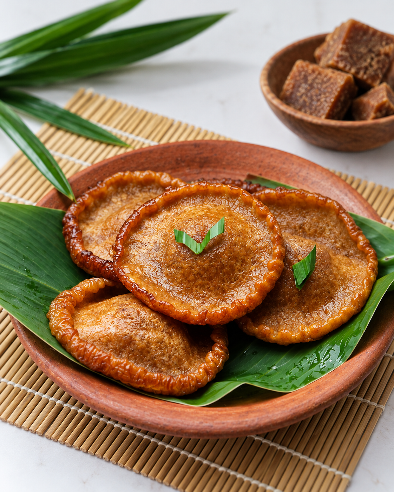
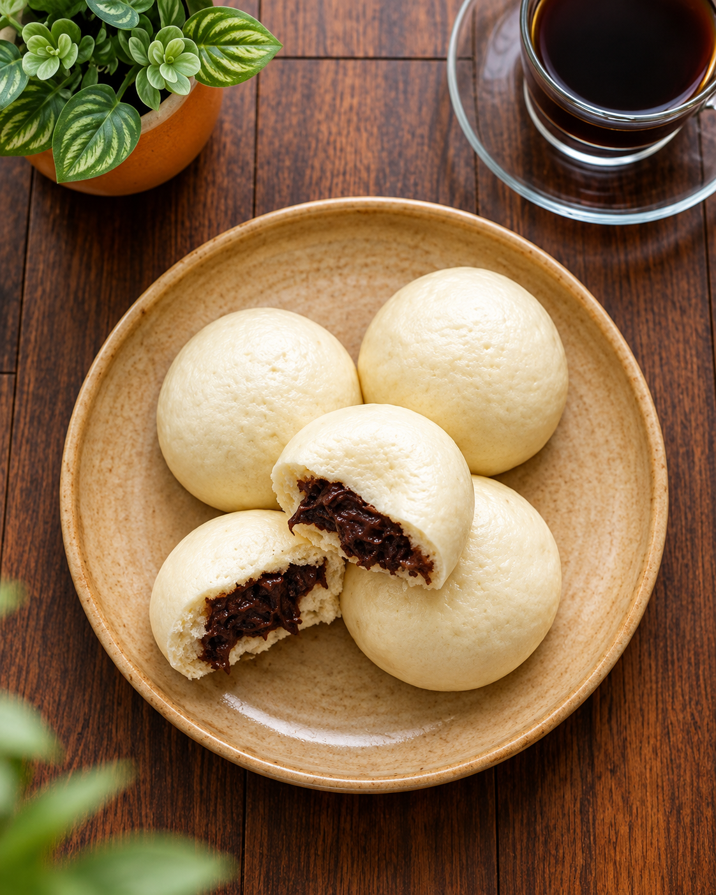
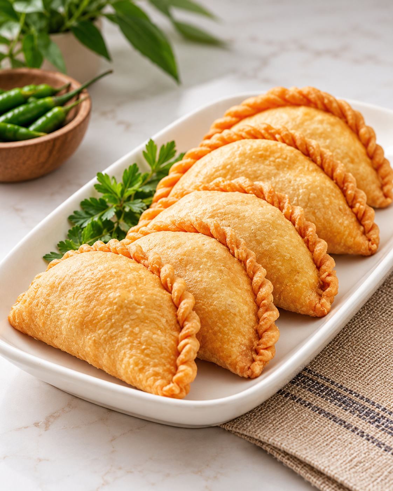
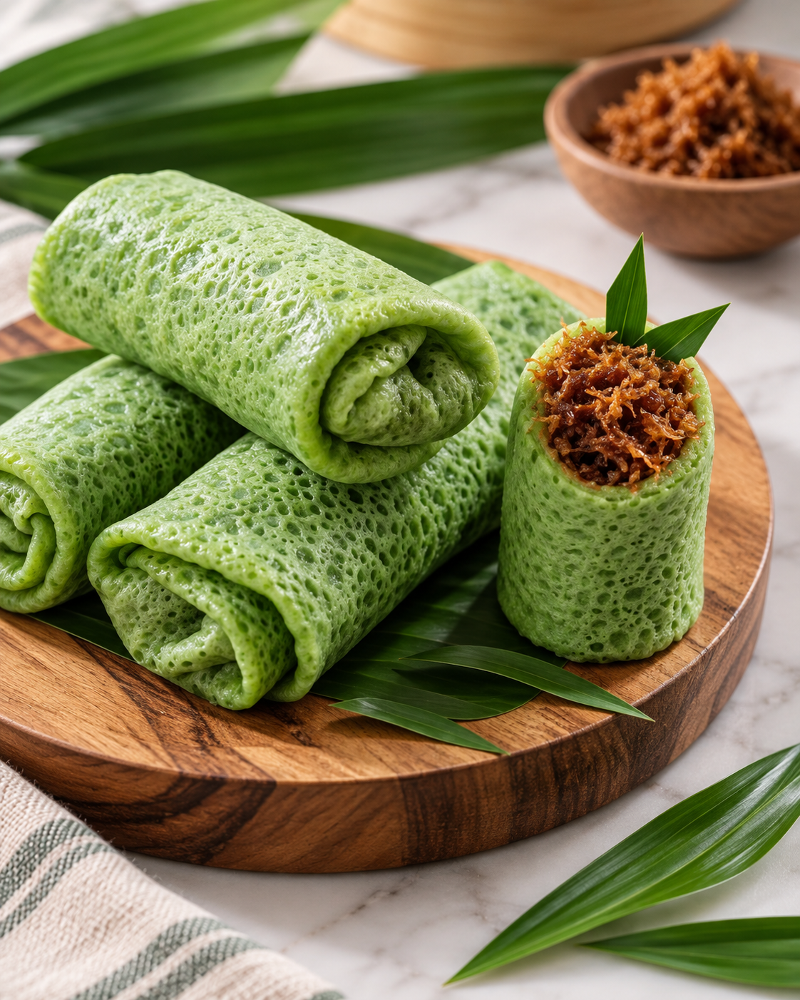

Dari Dapur Mama DinaKue Cucur
Cokelat keemasan dengan bentuk bundar yang khas. Kue tradisional yang membawa kesan hangat dan akrab dari dapur rumah.

Camilan Tradisional
Kue tradisional dengan rasa autentik untuk setiap momen berharga Anda.
Lihat KueGambar AI untuk prototipe development. Bukan foto produk Dina Cake dan belum berizin publikasi.
Rasa Autentik
Kelezatan tradisional pilihan.
Untuk Segala Momen
Cocok untuk keluarga, acara, dan hadiah.
Pilihan Beragam
Kue harian hingga pesanan acara.
Pemesanan Mudah
Proses sederhana dan jelas.
Dari dapur rumah Mama Dina, aneka kue disiapkan untuk menemani keseharian. Kenali pilihan kue rumahan yang selama ini hadir lewat warung dan cerita dari mulut ke mulut.

Dari Dapur Mama DinaCokelat keemasan dengan bentuk bundar yang khas. Kue tradisional yang membawa kesan hangat dan akrab dari dapur rumah.

Roti kukus berbentuk bulat dengan kulit putih dan isian di dalamnya. Pilihan camilan untuk menemani jeda di tengah kesibukan.

Kulit keemasan dengan lipatan pinggir yang khas. Camilan gurih yang cocok menemani waktu santai maupun kebersamaan.

Balutan hijau yang digulung rapi dengan isian di bagian tengah. Tampil sederhana, dengan warna yang khas dan menggugah selera.
Ada kue yang menarik perhatian? Tanyakan pilihan yang tersedia dan detail pemesanan langsung kepada Mama Dina melalui WhatsApp.
Konten menu acara belum ditampilkan.
DINA CAKE
Pemesanan kue bisa dilakukan dengan mudah melalui WhatsApp. Ikuti langkah-langkah berikut agar pesanan Anda dapat diproses dengan baik.
Kirim pesan melalui WhatsApp untuk memulai pemesanan.
Informasikan jenis kue, jumlah porsi, dan tanggal acara yang Anda inginkan.
Mama Dina akan mengonfirmasi ketersediaan dan detail pesanan Anda.
Kue akan disiapkan sesuai pesanan dan waktu yang telah disepakati.
SIAP MEMESAN?
Tanyakan pilihan kue, ketersediaan tanggal, dan detail lainnya langsung kepada Mama Dina.
Nomor WhatsApp menunggu konfirmasi. Tautan menuju informasi Kontak.
Cerita usaha dan aset menunggu persetujuan.
Informasi kontak belum ditampilkan.